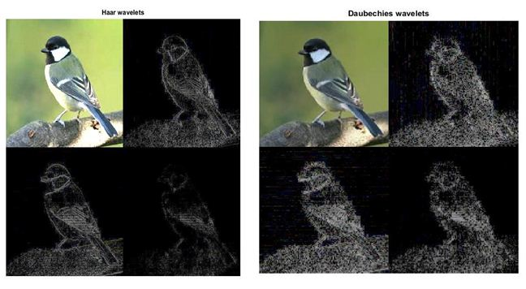

Applications of Wavelet Transform
The wavelet transform can be used to decompose a signal into a representation that show signal details and trends as a function of time. This representation can then be used to characterize transient events, reduce noise, compress data, and perform many other operations.
Important Applications of Wavelet Transforms
- Data and Image Compression
- Partial Differential Equation Solving
- Transient Detection
- Pattern Recognition
- Texture Analysis
- Noise/Trend Reduction
Ex. Image Compression using Discrete Wavelet Transform
